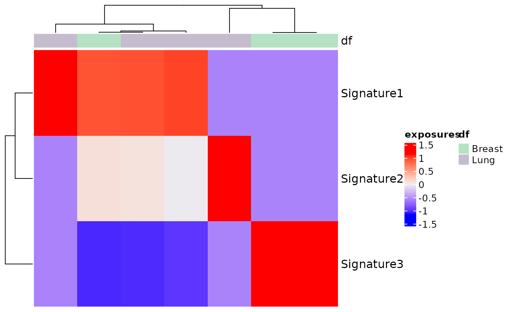

The exposures for different signatures can be
visualized using a heatmap with this function.
Heatmaps make it easier to visualize the data by
representing the magnitude of exposure values
as color in 2-dimensions. The variation in color
intensity can help see if the exposures are clustered
or how they vary over space. Exposures can be
normalized by providing the proportional argument.
Column annotations can also be seen by passing the col_annot argument.
plot_heatmap(
res_annot,
proportional = FALSE,
show_column_names = FALSE,
show_row_names = TRUE,
scale = TRUE,
subset_tumor = NULL,
subset_signatures = NULL,
annotation = NULL,
...
)A musica_result object generated by
a mutational discovery or prediction tool.
If TRUE, then the exposures will be normalized
to between 0 and 1 by dividing by the total number of counts for each sample.
Default FALSE.
Boolean check. If True, column names are shown.
Otherwise, they aren't.
Default FALSE
Boolean check. If True, row names are shown.
Otherwise, they aren't.
Default FALSE
Boolean check. If True, values are scaled by z-score.
Otherwise, they aren't.
Default TRUE
Users can specify certain tumor types on which they want to subset the exposure matrix for plotting the heatmap.
Users can specify certain signatures on which they want to subset the exposure matrix plotting the heatmap.
Users have the option of plotting the exposure matrix based on their given annotation like Tumor_Subtypes or age. Error given if the user given annotation doesn't exist in the res_annot annotation object.
Ellipsis used for passing any arguments directly to the ComplexHeatmap's heatmap function.
Generates a heatmap for using the exposure matrix.
data(res_annot)
plot_heatmap(res_annot = res_annot, proportional = TRUE, scale = TRUE,
annotation = "Tumor_Subtypes")
